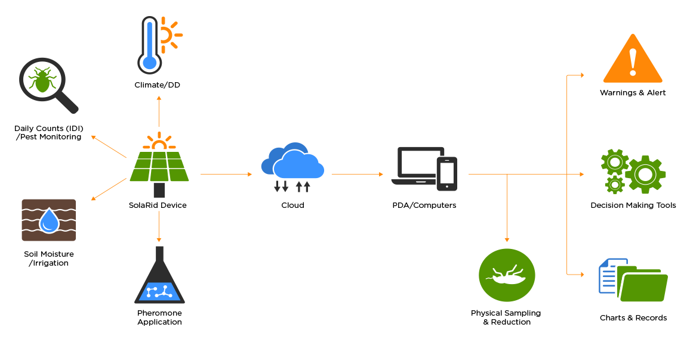
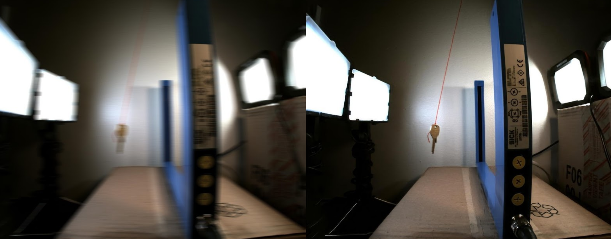

Remote Data Accumulation and Processing

Farmers, crop scouts, research entomologists, and producers all recieve the benefits of our product and data processing software. Our developed AI will count, manipulate, and display appropriate, real-time data with ease.
Artificial Intelligence Image Processing
Our specially developed, in house AI software allows the images gathered from our built-in insect detection / image capture process and turn the blurry images that are captured into crystal-clear images, and in turn, allows the AI to properly detect what insect was captured in the image for proper population counts.
An Example of the Image Processing
As seen above, the image to the left is the image before the AI processing. On the right, however, is a nearly pristine copy of the image to the right.
Insect Data
The cycle of our data accumulation and processing is as follows:
- Data is gathered from the SolaRid “Worker Unit” and sent to the “Mother Unit”
- The Mother Unit then sends the data to a cloud-centric SQL Database
- The data is manipulated through our developed AI in the transfer
between the Mother Unit and the SQL Database - After the data has been processed, it is then served to the IoT dashboard, accessible on your various internet-connected devices